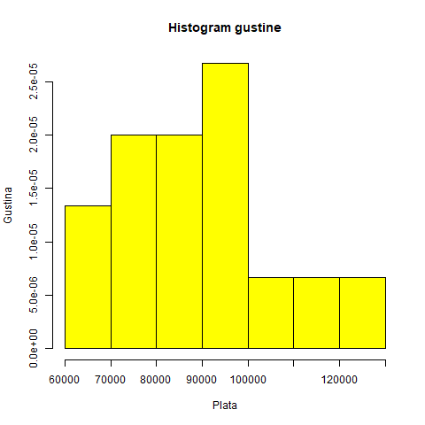

Histogram
Kada ispitujemo obeležje numeričkog tipa najčešće za grafički prikaz koristimo
histogram.
Za pravljenje histograma potrebne su nam dodatne informacije koje možemo dobiti od datih.
Prvenstveno, da bismo uzorak predstavili na histogramu neophodno je da ga
grupišemo u kategorije (intervale)
.
Kategorije formiramo tako da svaki element uzorka pripada
tačno jednoj kategoriji.
Pitanje koje se ovde postavlja: Na koji način je najbolje grupisati elemente uzorka?
Preporuka je da
broj kategorija bude$[log_2(n)]+1$ gde je $n$ obim uzorka i
da broj kategorija ne bude manji od pet.
Takođe, kako bismo izbegli da se podaci nalaze na granici između kategorija
preporuka je da početak prvog intervala pomerimo malo levo u odnosu na
minimalnu vrednost i da veličine kategorija imaju decimalu više u odnosu na
date podatke.
$X_{(k)}$ je
$k$-ti element po redu sortiranog uzorka.
Slučajna veličina $X_{(k)}$ se naziva
statistika poretka.
Niz $X_{(1)} \leq X_{(2)} \leq … \leq X_{(n)}$ je
varijacioni niz.
Najveći element u uzorku $X_{(n)}$, a
najmanji je $X_{(1)}$.
Raspon uzorka je $R=X_{(n)}-X_{(1)}$.
Ukoliko u uzorku imamo k kategorija približna veličina kategorije je $R/k$.
Napomena: kategorije ne moraju uvek biti iste veličine.
Sada kada smo uveli potrebne pojmove za pravljenje histograma možemo govoriti
o vrstama histograma:
Histogram apsolutnih frekvencija – ako su na $y$-osi prikazane frekvencije
Histogram relativnih frekvencija - ako su na $y$-osi frekvencije podeljene sa
veličinom uzorka
Histogram gustine-ako su na $y$-osi frekvencije podeljene i sa veličinom
uzorka i sa veličinom kategorija.
Mi ćemo najčešće upotrebljavati histogram gustina.
Primer:
Mesečne plate slučajno odabranih lekara u Srbiji. Dat je uzorak od 15 plata.
Nacrtati histogram gustine.
Uzorak: 80543, 120999, 73666, 98777, 90822, 85747, 90008, 67888, 102003,
68686, 98989, 78965, 81273, 78709, 112211.
